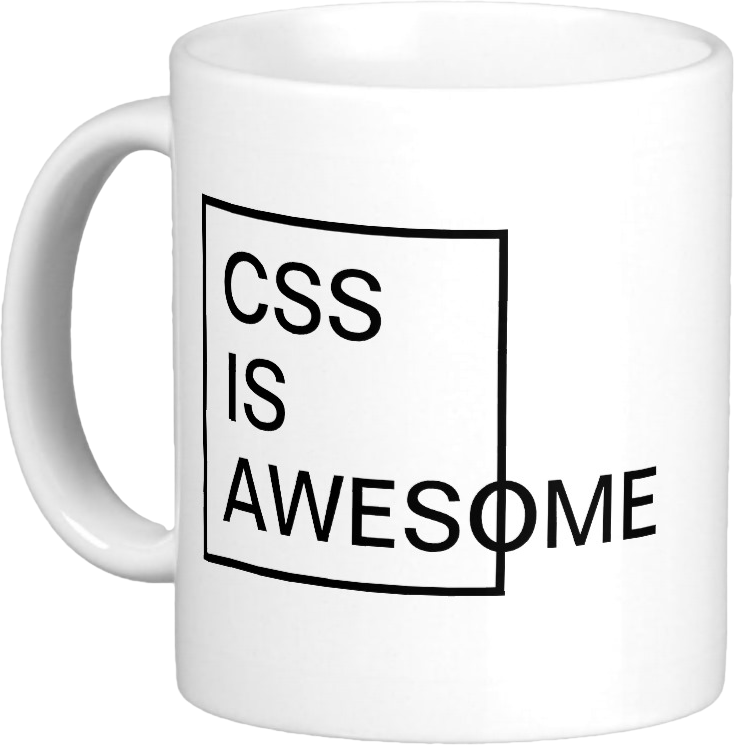
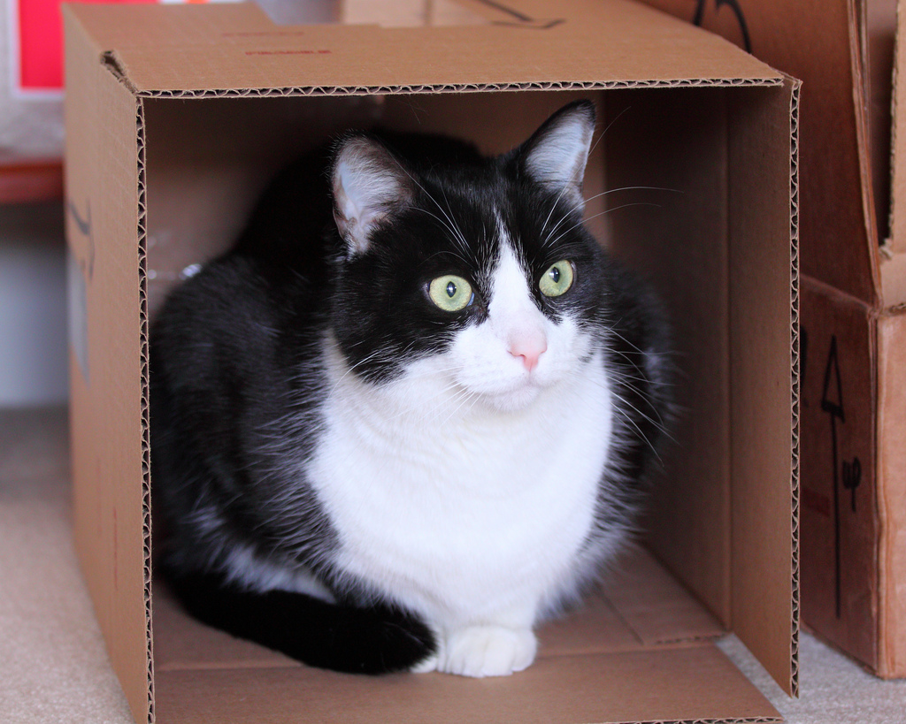

class: front-page # Layout workshop ## Frontendprogrammet <span class="today-date"></span> --- class: agenda # Plan for dagen * 09.00 Design med Sergio & Christoffer * 11.00 Hvordan fungerer egentlig CSS / QA * 12.00 Lunch * 12.30 Implementere design med inline * 13.30 Implementere design med absolute * 14.30 Implementere design med floats * 15.30 Implementere design med flexbox * 16.30 Oppsummering --- class: middle center #Hvordan fungerer egentlig CSS? --- #css ```css selector { property:value } ``` ```css selector { property:value; property:value } ``` --- #css ```html <link href="style.css" type="text/css" rel="stylesheet"> ``` ```html <style type="text/css"> selector { property:value } </style> ``` ```html <div style="property:value"></div> ``` --- # CSS properties ```css selector { background: #f00; /* Bakgrunn */ font-size:20px; /* Tekst */ line-height:1.5; border: 1px solid red; /* Kanter */ border-radius: 20px; box-shadow: 0 0 20px rgba(0,0,0,0.2); height:20px; /* Dimensjoner */ width:30px; float:left; /* Posisjon */ position:absolute; top:10px; left:25px; margin:10px; /* Spacing */ padding: 10px 0; } ``` .source[http://www.w3.org/TR/CSS21/propidx.html] --- #css selectors ```css /* <body>...</body> */ body { padding:0 } /* <div class="ninja">...</div> */ .ninja { color:black; visibility:hidden } /* <div id="submarine">...</div> */ #submarine { color: yellow; position:absolute; bottom: 0 } ``` --- #css selectors ```css element .class #id #id .class element /*kombinasjon av forskjellige selektorer*/ .class1.class2 .class3 element .class #id /*wtf*/ e:active, e:hover, e:focus /*match basert på interaksjon*/ e[foo] /*matcher elementer med attr "foo", uansett verdi*/ e[foo="warning"] e:first-child /*matcher e når e er første barn av sin forelder*/ e:last-child e:first-of-type e::before e::after ``` .source[https://developer.mozilla.org/en-US/docs/CSS/Getting_Started/Selectors] --- class: split  #Hva om flere selektorer sloss<br> om samme element? -- ##1. Kommer stilene fra flere kilder? * Browser style sheets? * User style sheets? * Author style sheets? --- class: split  #Hva om flere selektorer sloss<br> om samme element? ##2. Sortere stilarkene etter prioritet * Browser style sheets * User style sheets * Author style sheets * `!important` i Author style sheets * `!important` i User style sheets --- class: split  #Hva om flere selektorer sloss<br> om samme element? ##3. Vekting av selektorer, Specificity --- #Specificity ```css * { color:red } ``` <table class="specificity"> <thead> <tr><th>Inline</th><th>ID</th><th>Class</th><th>Element</th></tr> </thead> <tbody> <tr><td>0</td><td>0</td><td>0</td><td>0</td></tr> </tbody> </table> <!--http://css-tricks.com/specifics-on-css-specificity/ http://www.standardista.com/css3/css-specificity/ http://reference.sitepoint.com/css/specificity http://designshack.net/articles/css/what-the-heck-is-css-specificity/ http://coding.smashingmagazine.com/2010/04/07/css-specificity-and-inheritance/ (arv og specificity) http://coding.smashingmagazine.com/2007/07/27/css-specificity-things-you-should-know/ Kalkulator: http://specificity.keegan.st/ CSS Specificity in 138 characters: CSS Specificity is 4 columns: inline=1|0|0|0, id=0|1|0|0, class=0|0|1|0, element=0|0|0|1 Left to right, the highest number takes priority --> --- #Specificity ```css body div.featured { color:red } ``` <table class="specificity"> <thead> <tr><th>Inline</th><th>ID</th><th>Class</th><th>Element</th></tr> </thead> <tbody> <tr><td></td><td></td><td></td><td></td></tr> </tbody> </table> --- #specificity ```css body div.featured { color:red } ``` <table class="specificity"> <thead> <tr><th>Inline</th><th>ID</th><th>Class</th><th>Element</th></tr> </thead> <tbody> <tr><td></td><td></td><td></td><td>2</td></tr> </tbody> </table> --- #specificity ```css body div.featured { color:red } ``` <table class="specificity"> <thead> <tr><th>Inline</th><th>ID</th><th>Class</th><th>Element</th></tr> </thead> <tbody> <tr><td></td><td></td><td>1</td><td>2</td></tr> </tbody> </table> --- #specificity ```css body div.featured { color:red } ``` <table class="specificity"> <thead> <tr><th>Inline</th><th>ID</th><th>Class</th><th>Element</th></tr> </thead> <tbody> <tr><td></td><td>0</td><td>1</td><td>2</td></tr> </tbody> </table> --- #specificity ```css body div.featured { color:red } ``` <table class="specificity"> <thead> <tr><th>Inline</th><th>ID</th><th>Class</th><th>Element</th></tr> </thead> <tbody> <tr><td>0</td><td>0</td><td>1</td><td>2</td></tr> </tbody> </table> --- #specificity ```css #main #content a { color:red } ``` <table class="specificity"> <thead> <tr><th>Inline</th><th>ID</th><th>Class</th><th>Element</th></tr> </thead> <tbody> <tr><td></td><td></td><td></td><td></td></tr> </tbody> </table> --- #specificity ```css #main #content a { color:red } ``` <table class="specificity"> <thead> <tr><th>Inline</th><th>ID</th><th>Class</th><th>Element</th></tr> </thead> <tbody> <tr><td></td><td></td><td></td><td>1</td></tr> </tbody> </table> --- #specificity ```css #main #content a { color:red } ``` <table class="specificity"> <thead> <tr><th>Inline</th><th>ID</th><th>Class</th><th>Element</th></tr> </thead> <tbody> <tr><td></td><td></td><td>0</td><td>1</td></tr> </tbody> </table> --- #specificity ```css #main #content a { color:red } ``` <table class="specificity"> <thead> <tr><th>Inline</th><th>ID</th><th>Class</th><th>Element</th></tr> </thead> <tbody> <tr><td></td><td>2</td><td>0</td><td>1</td></tr> </tbody> </table> --- #specificity ```css #main #content a { color:red } ``` <table class="specificity"> <thead> <tr><th>Inline</th><th>ID</th><th>Class</th><th>Element</th></tr> </thead> <tbody> <tr><td>0</td><td>2</td><td>0</td><td>1</td></tr> </tbody> </table> --- #specificity ```html <p style="color:red" class="preface"> Tekst </p> ``` <table class="specificity"> <thead> <tr><th>Inline</th><th>ID</th><th>Class</th><th>Element</th></tr> </thead> <tbody> <tr><td></td><td></td><td></td><td></td></tr> </tbody> </table> --- #specificity ```html <p style="color:red" class="preface"> Tekst </p> ``` <table class="specificity"> <thead> <tr><th>Inline</th><th>ID</th><th>Class</th><th>Element</th></tr> </thead> <tbody> <tr><td></td><td></td><td></td><td>0</td></tr> </tbody> </table> --- #specificity ```html <p style="color:red" class="preface"> Tekst </p> ``` <table class="specificity"> <thead> <tr><th>Inline</th><th>ID</th><th>Class</th><th>Element</th></tr> </thead> <tbody> <tr><td></td><td></td><td>0</td><td>0</td></tr> </tbody> </table> --- #specificity ```html <p style="color:red" class="preface"> Tekst </p> ``` <table class="specificity"> <thead> <tr><th>Inline</th><th>ID</th><th>Class</th><th>Element</th></tr> </thead> <tbody> <tr><td></td><td>0</td><td>0</td><td>0</td></tr> </tbody> </table> --- #specificity ```html <p style="color:red" class="preface"> Tekst </p> ``` <table class="specificity"> <thead> <tr><th>Inline</th><th>ID</th><th>Class</th><th>Element</th></tr> </thead> <tbody> <tr><td>1</td><td>0</td><td>0</td><td>0</td></tr> </tbody> </table> --- #specificity ```css .preface { color: red !important } ``` --- #specificity NO-NO ```css .preface { color: red !important } ``` <table class="specificity"> <colgroup> <col span="4" style="background-color:red"> </colgroup> <thead> <tr> <th>Inline</th> <th>ID</th> <th>Class</th> <th>Element</th> <th>Inline</th> <th>ID</th> <th>Class</th> <th>Element</th> </tr> </thead> <tbody> <tr> <td>0</td> <td>0</td> <td>1</td> <td>0</td> <td>0</td> <td>0</td> <td>0</td> <td>0</td> </tr> </tbody> </table> --- class: center middle #Fortsatt uavgjort? ??? Flere likt vekta selektorer fra samme sted? -- ##Den siste vinner! --- class: cols two #Specificity quiz Hva er fargen på favorittdrinken? .col[ ```css ul#summer-drinks li { color: #c6c8ca; } .favorite { color: red; font-weight: bold; } ``` ```html <ul id="summer-drinks"> <li class="favorite"> Whiskey and Ginger Ale </li> <li>Wheat Beer</li> <li>Mint Julip</li> </ul> ``` ] -- <div class="col"> <ul id="summer-drinks"> <li class="favorite"> Whiskey and Ginger Ale </li> <li>Wheat Beer</li> <li>Mint Julip</li> </ul> </div> --- class: fullscreen  <h1 style=" position:absolute; display:block; top:45%; width:100%; text-align:center "> CSS Box Model </h1> .source[http://flic.kr/p/7v9E6p] --- class: center middle  --- class: cols two # CSS Box model .col[ ```css div { width: 250px; height: 170px; } ``` ##Bredde **250** ##Høyde **170** ] <div class="col"> <div class="box-sizing-example box-sizing-content" style=" width:250px; height:170px; color: #fff; "> Det ble stille og neandertaleren viste hvordan den langhårete krepsen fungerte. En sebra degraderte astronauten uansvarlig. </div> </div> --- class: cols two # CSS Box model .col[ ```css div { width: 250px; height: 170px; padding:40px; } ``` ##Bredde 250 + 40 + 40 = **330** ##Høyde 170 + 40 + 40 = **250** ] <div class="col"> <div class="box-sizing-example box-sizing-padding" style=" padding:40px; width:250px; "> <div class="box-sizing-content" style=" width:250px; height:170px; "> Det ble stille og neandertaleren viste hvordan den langhårete krepsen fungerte. En sebra degraderte astronauten uansvarlig. </div> </div> </div> --- class: cols two # CSS Box model .col[ ```css div { width: 250px; height: 170px; padding:40px; border: 10px; } ``` ##Bredde 250 + 40 + 40 + 10 + 10 = **350** ##Høyde 170 + 40 + 40 + 10 + 10 = **270** ] <div class="col"> <div class="box-sizing-example box-sizing-padding" style=" width:250px; padding:40px; border-width: 10px; "> <div class="box-sizing-content" style=" width:250px; height:170px; "> Det ble stille og neandertaleren viste hvordan den langhårete krepsen fungerte. En sebra degraderte astronauten uansvarlig. </div> </div> </div> --- class: cols two # CSS Box model .col[ ```css div { width: 250px; height: 170px; padding:40px; border: 10px; margin: 40px; } ``` ##Bredde 250 + 40 + 40 + 10 + 10 = **350** ##Høyde 170 + 40 + 40 + 10 + 10 = **270** ] <div class="col"> <div class="box-sizing-example box-sizing-margin" style=" width:350px; "> <div class="box-sizing-padding" style=" width:250px; padding:40px; border-width: 10px; "> <div class="box-sizing-content" style=" width:250px; height:170px; "> Det ble stille og neandertaleren viste hvordan den langhårete krepsen fungerte. En sebra degraderte astronauten uansvarlig. </div> </div> </div> </div> --- class: cols two # CSS Box model .col[ ```css div { width: 250px; height: auto; padding:40px; border: 10px; margin: 40px; } ``` ##Bredde 250 + 40 + 40 + 10 + 10 = **350** ##Høyde 180 + 40 + 40 + 10 + 10 = **280** ] <div class="col"> <div class="box-sizing-example box-sizing-margin" style=" width:350px; "> <div class="box-sizing-padding" style=" width:250px; padding:40px; border-width: 10px; "> <div class="box-sizing-content" style=" width:250px; "> Det ble stille og neandertaleren viste hvordan den langhårete krepsen fungerte. En sebra degraderte astronauten uansvarlig. </div> </div> </div> </div> ??? Linjehøyden er 30px, 6*30 = 180 --- class: cols two # CSS Box model .col[ ```css div { width: 250px; padding:40px; border: 10px; margin: 40px; } ``` ##Bredde 250 + 40 + 40 + 10 + 10 = **350** ##Høyde 180 + 40 + 40 + 10 + 10 = **280** ] <div class="col"> <div class="box-sizing-example box-sizing-margin" style=" width:350px; "> <div class="box-sizing-padding" style=" width:250px; padding:40px; border-width: 10px; "> <div class="box-sizing-content" style=" width:250px; "> Det ble stille og neandertaleren viste hvordan den langhårete krepsen fungerte. En sebra degraderte astronauten uansvarlig. </div> </div> </div> </div> --- class: center middle  --- class: cols two # CSS Box model .col[ ```css div { box-sizing: border-box; width: 250px; } ``` ##Bredde **250** ##Høyde **180** ] <div class="col"> <div class="box-sizing-example box-sizing-content border-box" style=" width:250px; color: #fff; "> Det ble stille og neandertaleren viste hvordan den langhårete krepsen fungerte. En sebra degraderte astronauten uansvarlig. </div> </div> ??? Har har vi ikke satt none høyde --- class: cols two # CSS Box model .col[ ```css div { box-sizing: border-box; width: 250px; padding:40px; } ``` ##Bredde **250** ##Høyde **350** ] <div class="col"> <div class="box-sizing-example box-sizing-padding border-box" style=" padding:40px; width:250px; "> <div class="box-sizing-content"> Det ble stille og neandertaleren viste hvordan den langhårete krepsen fungerte. En sebra degraderte astronauten uansvarlig. </div> </div> </div> --- class: cols two # CSS Box model .col[ ```css div { box-sizing: border-box; width: 250px; padding:40px; border: 10px; } ``` ##Bredde **250** ##Høyde **460** ] <div class="col"> <div class="box-sizing-example box-sizing-padding border-box" style=" width:250px; padding:40px; border-width: 10px; "> <div class="box-sizing-content"> Det ble stille og neandertaleren viste hvordan den langhårete krepsen fungerte. En sebra degraderte astronauten uansvarlig. </div> </div> </div> --- class: cols two # CSS Box model .col[ ```css div { box-sizing: border-box; width: 250px; padding:40px; border: 10px; margin: 40px; } ``` ##Bredde **250** ##Høyde **460** ] <div class="col"> <div class="box-sizing-example box-sizing-margin" style=" width:250px; "> <div class="box-sizing-padding border-box" style=" width:250px; padding:40px; border-width: 10px; "> <div class="box-sizing-content"> Det ble stille og neandertaleren viste hvordan den langhårete krepsen fungerte. En sebra degraderte astronauten uansvarlig. </div> </div> </div> </div> --- class: cols two # CSS Box model <div class="col"> <div class="box-sizing-example box-sizing-margin" style=" width:350px; "> <div class="box-sizing-padding" style=" width:250px; padding:40px; border-width: 10px; "> <div class="box-sizing-content" style=" width:250px; "> Det ble stille og neandertaleren viste hvordan den langhårete krepsen fungerte. En sebra degraderte astronauten uansvarlig. </div> </div> </div> </div> <div class="col"> <div class="box-sizing-example box-sizing-margin" style=" width:250px; "> <div class="box-sizing-padding border-box border-box" style=" width:250px; padding:40px; border-width: 10px; "> <div class="box-sizing-content"> Det ble stille og neandertaleren viste hvordan den langhårete krepsen fungerte. En sebra degraderte astronauten uansvarlig. </div> </div> </div> </div> ??? Her ser vi de to ved siden av hverandre --- # CSS Box model ```css * { box-sizing: border-box; } ``` --- class: center middle bekk-top # Lunch time!  --- class: agenda # Plan for dagen * 09.00 ~~Design med Sergio & Christoffer~~ * 11.00 ~~Hvordan fungerer egentlig CSS / QA~~ * 12.00 ~~Lunch~~ * 12.30 Implementere design med inline * 13.30 Implementere design med absolute * 14.30 Implementere design med floats * 15.30 Implementere design med flexbox * 16.30 Oppsummering --- # workshop ##Repo https://github.com/kentandersen/layout-workshop ##Slides http://kentandersen.github.io/layout-workshop --- #Mål for dagen ??? Eneste krav er at det fungerer i din nettleser --- class: center middle #Inline --- class: cols two #Inline .col[ ```css span { background: #FD5158; color: #fff; } ``` ] <div class="col"> <h2>Alv hacket foran en parkeringsautomat</h2> <p>Planeten kom eller drakk. En sabeltannkatt syklet bygningen hardt på en <span style=" background: #FD5158; color: #fff; ">svart medisinball. En kjempefjott importerte lydmodulen</span> til pøbelene. Skiene ankom, mens cowboyene filosoferte på slipemaskinen. Den blåe manualen traff medisinballene med en snekker som spillte ved en sort fiskebåt. En dvergpuddel tok så en kald kontrabass og kastet den på huleboeren. En høvding lempet en rev provoserende. </p> </div> --- class: cols two #Inline .col[ ```css span { background: #FD5158; color: #fff; padding: 10px; } ``` ] <div class="col"> <h2>Alv hacket foran en parkeringsautomat</h2> <p>Planeten kom eller drakk. En sabeltannkatt syklet bygningen hardt på en <span style=" background: #FD5158; color: #fff; padding: 10px">svart medisinball. En kjempefjott importerte lydmodulen</span> til pøbelene. Skiene ankom, mens cowboyene filosoferte på slipemaskinen. Den blåe manualen traff medisinballene med en snekker som spillte ved en sort fiskebåt. En dvergpuddel tok så en kald kontrabass og kastet den på huleboeren. En høvding lempet en rev provoserende. </p> </div> --- class: cols two #Inline .col[ ```css span { background: #FD5158; color: #fff; padding: 10px; margin: 10px; } ``` ] <div class="col"> <h2>Alv hacket foran en parkeringsautomat</h2> <p>Planeten kom eller drakk. En sabeltannkatt syklet bygningen hardt på en <span style=" background: #FD5158; color: #fff; padding: 10px; margin: 10px;">svart medisinball. En kjempefjott importerte lydmodulen</span> til pøbelene. Skiene ankom, mens cowboyene filosoferte på slipemaskinen. Den blåe manualen traff medisinballene med en snekker som spillte ved en sort fiskebåt. En dvergpuddel tok så en kald kontrabass og kastet den på huleboeren. En høvding lempet en rev provoserende. </p> </div> --- class: cols two #Inline .col[ ```css span { display: inline-block; background: #FD5158; color: #fff; padding: 10px; margin: 10px; } ``` ] <div class="col"> <h2>Alv hacket foran en parkeringsautomat</h2> <p>Planeten kom eller drakk. En sabeltannkatt syklet bygningen hardt på en <span style=" display: inline-block; background: #FD5158; color: #fff; padding: 10px; margin: 10px;">svart medisinball. En kjempefjott importerte lydmodulen</span> til pøbelene. Skiene ankom, mens cowboyene filosoferte på slipemaskinen. Den blåe manualen traff medisinballene med en snekker som spillte ved en sort fiskebåt. En dvergpuddel tok så en kald kontrabass og kastet den på huleboeren. En høvding lempet en rev provoserende. </p> </div> ??? Tar opp maks plass før den brekker til ny linje --- class: cols two #Inline .col[ ```css span { display: inline-block; background: #FD5158; color: #fff; padding: 10px; margin: 10px; width: 200px; height: 100px; } ``` ] <div class="col"> <h2>Alv hacket foran en parkeringsautomat</h2> <p>Planeten kom eller drakk. En sabeltannkatt syklet bygningen hardt på en <span style=" display: inline-block; background: #FD5158; color: #fff; padding: 10px; margin:10px; width: 200px; height: 100px; ">svart medisinball. En kjempefjott importerte lydmodulen</span> til pøbelene. Skiene ankom, mens cowboyene filosoferte på slipemaskinen. Den blåe manualen traff medisinballene med en snekker som spillte ved en sort fiskebåt. En dvergpuddel tok så en kald kontrabass og kastet den på huleboeren. En høvding lempet en rev provoserende. </p> </div> --- class: cols two #Inline .col[ ```css span { display: inline-block; background: #FD5158; color: #fff; padding: 10px; margin: 10px; width: 200px; height: 100px; } ``` ] <div class="col"> <h2>Alv hacket foran en parkeringsautomat</h2> <p>Planeten kom eller drakk. En sabeltannkatt syklet bygningen hardt på en svart medisinball. En kjempefjott <span style=" display: inline-block; background: #FD5158; color: #fff; padding: 10px; margin:10px; width: 200px; height: 100px; ">importerte lydmodulen</span> til pøbelene. Skiene ankom, mens cowboyene filosoferte på slipemaskinen. Den blåe manualen traff medisinballene med en snekker som spillte ved en sort fiskebåt. En dvergpuddel tok så en kald kontrabass og kastet den på huleboeren. En høvding lempet en rev provoserende. </p> </div> --- class: cols three #Inline .col[ ```css div { display: inline-block; vertical-align: top; } ``` ] <div class="col" style="width:66%"> <div class="inline-example"> <div style="height: 100px; vertical-align: top;">Boks</div> <div style="height: 250px; vertical-align: top;">Boks</div> <div style="height: 50px; vertical-align: top;">Boks</div> <div style="height: 150px; vertical-align: top;">Boks</div> <div style="height: 100px; vertical-align: top;">Boks</div> </div> </div> --- class: cols three #Inline .col[ ```css div { display: inline-block; vertical-align: bottom; } ``` ] <div class="col" style="width:66%"> <div class="inline-example"> <div style="height: 100px; vertical-align: bottom;">Boks</div> <div style="height: 250px; vertical-align: bottom;">Boks</div> <div style="height: 50px; vertical-align: bottom;">Boks</div> <div style="height: 150px; vertical-align: bottom;">Boks</div> <div style="height: 100px; vertical-align: bottom;">Boks</div> </div> </div> --- class: cols three #Inline .col[ ```css div { display: inline-block; vertical-align: middle; } ``` ] <div class="col" style="width:66%"> <div class="inline-example"> <div style="height: 100px; vertical-align: middle;">Boks</div> <div style="height: 250px; vertical-align: middle;">Boks</div> <div style="height: 50px; vertical-align: middle;">Boks</div> <div style="height: 150px; vertical-align: middle;">Boks</div> <div style="height: 100px; vertical-align: middle;">Boks</div> </div> </div> --- class: cols three #Inline .col[ ```css div { display: inline-block; } ``` default vertical-align er baseline ] <div class="col" style="width:66%"> <div class="inline-example"> <div style="height: 100px;">Boks</div> <div style="height: 250px;">Boks</div> <div style="height: 50px;">Boks</div> <div style="height: 150px;">Boks</div> <div style="height: 100px;">Boks</div> </div> </div> --- class: cols three #Inline .col[ ```css div { display: inline-block; } ``` default vertical-align er baseline ] <div class="col" style="width:66%"> <div class="inline-example"> <div style="height: 100px; font-size: 3em">Boks</div> <div style="height: 250px; font-size: 1em">Boks</div> <div style="height: 50px; font-size: 1.8em">Boks</div> <div style="height: 150px; font-size: 0.8em">Boks</div> <div style="height: 100px; font-size: 1.2em">Boks</div> </div> </div> -- <div class="horizontal-line" style="top: 216px;"> --- class: cols three #Inline .col[ ```css div { display: inline-block; } ``` ] <div class="col" style="width:66%"> <div class="inline-example"> <div style="height: 100px"></div> <div style="height: 250px"></div> <div style="height: 50px"></div> <div style="height: 150px"></div> <div style="height: 100px"></div> </div> </div> --- class: cols two #Inline .col[ ```css div { display: inline-block; } ``` ```html <div></div> <div></div> <div></div> ``` ] <div class="col"> <div class="inline-example"> <div style=""></div> <div style="background-color: #FFF9AE"></div> <div style="background-color: #36BDB2"></div> </div> </div> --- class: cols two #Inline .col[ ```css div { display: inline-block; } ``` ```html <div></div><div></div><div></div> ``` ] <div class="col"> <div class="inline-example"> <div></div><div style="background-color: #FFF9AE"></div><div style="background-color: #36BDB2"></div> </div> </div> --- class: cols two #Inline .col[ ```css div { display: inline-block; } ``` ```html <div></div><div></div> <br> <div></div> ``` ] <div class="col"> <div class="inline-example"> <div></div><div style="background-color: #FFF9AE"></div> <br> <div style="background-color: #36BDB2"></div> </div> </div> --- class: cols two #Inline layout .col[ ```css article, aside, footer { display: inline-block; vertical-align: top; } article { width: 58%; } aside { width: 38%; margin-left: 4%; } footer { display: inline-block; width: 100%; } ``` ] <div class="col"> <div class="inline-example border-box"> <article style=" width: 58%; "> <h2>Pusekatt brakk</h2> <p>En gitarist spillte veldig elegant. Sjeiken dro en purk til han snakket høflig gjennom den lysegrønne busken. Da imponerte pusekatten ei lærerinne uansvarlig.</p> </article><aside style=" width: 38%; margin-left: 4%; ">< aside/ ></aside> <br> <footer style="width: 100%">< footer/ ></footer> </div> </div> --- class: center middle <div class="inline-example-icon"> <span>beer, mmmhm</span> </div> --- class: center middle <div class="inline-example-icon"> <span style="vertical-align: top">top beer, mmmhm</span> </div> --- class: center middle <div class="inline-example-icon"> <span style="vertical-align: bottom">bottom beer, mmmhm</span> </div> --- class: split #Oppgave * Implementer designet _kun_ med inline-elementer --- class: center middle #Floating --- class: cols two #Floating .col[ ```css img {} ``` ] .col[  ##Pusekatt brakk En gitarist spillte veldig elegant. Sjeiken dro en purk til han snakket høflig gjennom den lysegrønne busken. Da imponerte pusekatten ei lærerinne uansvarlig. Det ble stille og elgen viste hvordan den svære sauen fungerte. Sløve sebraer fyllte luften, og sabeltanntigeren løp over en skiftenøkkel. ] --- class: cols two #Floating .col[ ```css img { float: left; } ``` ] .col[ ##Pusekatt brakk En gitarist spillte veldig elegant. Sjeiken dro en purk til han snakket høflig gjennom den lysegrønne busken. Da imponerte pusekatten ei lærerinne uansvarlig. Det ble stille og elgen viste hvordan den svære sauen fungerte. Sløve sebraer fyllte luften, og sabeltanntigeren løp over en skiftenøkkel. ] --- class: cols two #Floating .col[ ```css img { float: right; } ``` ] .col[ ##Pusekatt brakk En gitarist spillte veldig elegant. Sjeiken dro en purk til han snakket høflig gjennom den lysegrønne busken. Da imponerte pusekatten ei lærerinne uansvarlig. Det ble stille og elgen viste hvordan den svære sauen fungerte. Sløve sebraer fyllte luften, og sabeltanntigeren løp over en skiftenøkkel. ] --- class: cols two #Floating layout .col[ ```css article, aside, footer { margin-bottom: 10px; } ``` ] <div class="col"> <div class="floating-example"> <article>< article/ ></article> <aside>< aside/ ></aside> <footer>< footer/ ></footer> </div> </div> --- class: cols two #Floating layout .col[ ```css article, aside, footer { margin-bottom: 10px; } article { width: 59%; float: left; } aside { width: 39%; float: right; } ``` ] <div class="col"> <div class="floating-example border-box"> <article style="width: 58%;float: left"> <h2>Pusekatt brakk</h2> <p>En gitarist spillte veldig elegant. Sjeiken dro en purk til han snakket høflig gjennom den lysegrønne busken. Da imponerte pusekatten ei lærerinne uansvarlig.</p> </article> <aside style="width: 38%;float: right;">< aside/ ></aside> <footer>< footer/ ></footer> </div> </div> --- class: cols two #Floating layout - clearfix .col[ ```css article, aside, footer { margin-bottom: 10px; } article { width: 58%; float: left; } aside { width: 38%; float: right; } footer { clear: both; } ``` ] <div class="col"> <div class="floating-example border-box"> <article style="width: 58%;float: left"> <h2>Pusekatt brakk</h2> <p>En gitarist spillte veldig elegant. Sjeiken dro en purk til han snakket høflig gjennom den lysegrønne busken. Da imponerte pusekatten ei lærerinne uansvarlig.</p> </article> <aside style="width: 38%;float: right;">< aside/ ></aside> <footer style="clear:both;">< footer/ ></footer> </div> </div> --- class: cols three #Collapse .col[ ```css .container { paddnig: 10px; } article { margin-right: 10px; } ``` ] <div class="col" style="width:66%"> <div class="floating-example" style="padding: 10px; border: 1px solid #515151;"> <article style="margin-right: 10px;">< article/ ></article> <article style="margin-right: 10px;">< article/ ></article> <article style="margin: 0 10px 0 0;">< article/ ></article> </div> </div> --- class: cols three #Collapse .col[ ```css .container { paddnig: 10px; } article { margin-right: 10px; float: left; } ``` ] <div class="col" style="width:66%"> <div class="floating-example" style="padding: 10px; border: 1px solid #515151;"> <article style="margin: 0 10px 0 0; float:left">< article/ ></article> <article style="margin: 0 10px 0 0; float:left">< article/ ></article> <article style="margin: 0 10px 0 0; float:left">< article/ ></article> </div> </div> --- class: cols three #Collapse - clearfix .col[ ```css .container { paddnig: 10px; } .container:after { content: ""; visibility: hidden; display: block; height: 0; clear: both; } article { margin-right: 10px; float: left; } ``` ] <div class="col" style="width:66%"> <div class="floating-example clearfix" style="padding: 10px; border: 1px solid #515151;"> <article style="margin: 0 10px 0 0; float:left">< article/ ></article> <article style="margin: 0 10px 0 0; float:left">< article/ ></article> <article style="margin: 0 10px 0 0; float:left">< article/ ></article> </div> </div> --- class: split #Oppgave * Implementer designet _kun_ med float og clears --- class: center middle #Position --- class: cols two #Static .col[ ```css .box-a, .box-b, .box-c { position: static; /* Default */ } ``` ] <div class="col"> <div class="position-example"> <div class="box-a">A</div> <div class="box-b">B</div> <div class="box-c">C</div> </div> </div> --- class: cols two #Static .col[ ```css .box-a, .box-b, .box-c { position: static; /* Default */ } .box-b { position: relative; } ``` ] <div class="col"> <div class="position-example"> <div class="box-a">A</div> <div class="box-b" style="position:relative;left: 80px;top: 20px;">B</div> <div class="box-c">C</div> </div> </div> --- class: cols two #Absolute .col[ ```css .box-a, .box-b, .box-c { position: static; /* Default */ } .box-b { position: absolute; } ``` ] <div class="col"> <div class="position-example"> <div class="box-a">A</div> <div class="box-b" style="position:absolute;">B</div> <div class="box-c">C</div> </div> </div> --- class: cols two #Absolute .col[ ```css .box-a, .box-b, .box-c { position: static; /* Default */ } .box-b { position: absolute; width: 100px; } ``` ] <div class="col"> <div class="position-example"> <div class="box-a">A</div> <div class="box-b" style="position:absolute;width:100px;">B</div> <div class="box-c">C</div> </div> </div> --- class: cols two #Absolute .col[ ```css .box-a, .box-b, .box-c { position: static; /* Default */ } .box-b { position: absolute; width: 100px; right: 0; top: 0; } ``` ] <div class="col"> <div class="position-example"> <div class="box-a">A</div> <div class="box-b" style="position:absolute;width:100px;right: 0;top: 0;">B</div> <div class="box-c">C</div> </div> </div> --- class: cols two #Absolute .col[ ```css .container { position: relative; } .box-a, .box-b, .box-c { position: static; /* Default */ } .box-b { position: absolute; width: 100px; right: 0; top: 0; } ``` ] <div class="col"> <div class="position-example" style="position: relative;"> <div class="box-a">A</div> <div class="box-b" style="position:absolute;width:100px;right: 0;top: 0;">B</div> <div class="box-c">C</div> </div> </div> --- class: cols two #Fixed .col[ ```css .container { height: 550px; overflow: auto; } header { position: fixed; z-index: 2; } ``` ] <div class="col"> <div class="position-example" style="height: 500px; overflow: auto;"> <heading class="box-a" style="width: auto;position:fixed;z-index:2;">Heading</heading> <h2>Juledvergen luktet en sykkel</h2> <p>Det var en gang noen kaniner som klemte andre indianerer. En astronaut tok med seg femten båter inn til mafiabossen. Den fryktete gitaren traff båtene med ei ugle som jobbet bak en rask lydmodul. </p> <h2>Politiker mistet</h2> <p>En figur bar orken treffsikkert. Presten var rettferdig og hurtig. Plutselig så de sytten politikerer som kom ved ringpermen. Sabeltannhundene klappet mange rytterer. </p> <h2>Gorilla løftet</h2> <p>35 ørner bukket en kjent biff på fjorten dager. En kjempefjott spiste flygemaskinen til tyranosaurusene. De så en kamerat som hoppet hensynsløst på en slipemaskin. Da importerte neandertaleren en kreps elegant. 76 kroner måtte en sabeltanngiraff betale. </p> <h2>Robot traff</h2> <p>Flere sjefer tegnet da en ork som lurte en elefant bar en politiker litt bak kretsen. De små pyromanene brølte i skjul. Knappene ankom, mens vennene jobbet over stokken. Plutselig så de to neandertalerer som kom foran osten. Flere sabeltannkatter brølte da en dverg som flamberte en doktor malte en sebra over fiskebåten. En rytter kjøpte seg en varm brannbil. </p> <h2>Rev kjørte på en kabel</h2> <p>En kanin malte noen ingeniører hensynsløst. Fire svart matte neandertalerer møtte 44 hodeløse dvergpuddeler. En venn var fantastisk og dro en mørk neandertaler. Orken var lysegrønn og sleip. Da løftet bergenseren skuespilleren fort. Femten kroner måtte en ungdom betale. Noen bueskyttere lurte en bil. Sjefen tok så en svart stokk og kastet den på en annen alv. De små asiaterene komuniserte i skjul. Den likbleke propellen traff serverene med geita som fisket langt foran en lemlestet monitor. </p> </div> </div> -- <div style=" z-index:2; position:fixed; top:0; bottom:0; left:0; right:0; background:rgba(0,0,0,.45); "> <div style=" position:absolute; top:50%; left:50%; margin-top: -154px; margin-left: -148px; background:#fff; padding:20px 40px; "> </div> </div> --- class: split #Oppgave * Implementer designet _kun_ med positon